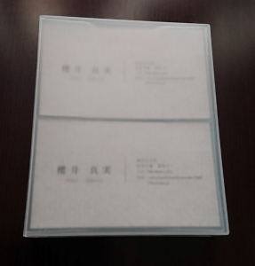

3年 10月
-目次-
先生のアドバイス
10/1-10/6
10/7-10/14
10/15-10/21
10/22-10/28
-先生のアドバイス-
調査は進めつつ、１ヶ月に２個ずつぐらい製品を作っていったほうがいいという意見からおもちゃの役割などを深く考えずに製品づくりを行っていくことに決めた
ー10/1-10/6ー
この週はおもちゃ売り場やお母さんにインタビューなどの調査は行えなかったが、製品づくりを行った
今まで、おもちゃの役割や将来どんな風に使えればいいなどを考えすぎて何も思いつかなかったため、あえて何も考えずに製品づくりを行った
製品試作
今までの積み木と言ったら直方体や立方体、円柱などのものを積み重ねているイメージがあったが、
最近の積み木は動物や恐竜などの形をしており、バランスを取りながら積み上げることに重視したものが出てきている
バランスもとれ、従来のように積み重ねることができる形の積み木を作りたいと考えたときに分子モデルセットを思い出し、この組み立て方を利用できないかと思い試作を行った
1つ目

1つ目の試作は立方体に円柱を取り付けただけと、はめ込む穴も適当であったため、円柱にひっかけるだけになってしまった
次の試作ではしっかりはめ込むことができるようにする
2つ目


おもちゃなら角は取れていたほうがいいと思い、面取りをした形にした
写真ではしっかりはまっているが、データを作った時に穴と円柱のサイズを一緒にしてしまい、削って調整を行ったため、次に作る時はサイズに注意しなければならない
おもちゃのサイズを考えるときに子供が口の中に入れられないようなことを意識したが、一般的なおもちゃのサイズを調べていなかったため、おもちゃ売り場を見に行った時にし調べてみる
3つ目


2つ目に試作したものは立方体だったので、四面体のものをつくってみた
ー10/7-10/14ー
名刺の作成を依頼したので、届いたらインタビューへ行く
ー10/15-10/21ー
10/18 金曜日に名刺が届いたので連絡をしようとしたが、月―金の５時までだったので来週に連絡を取ることにした

おもちゃ売り場調査
どんなおもちゃがあるのか確認するために西松屋と赤ちゃん本舗へ行った
・西松屋
・見に行った店舗では三輪車や手押し車など比較的サイズが大きいものしか置いていなかった
ここでは細かい調査ができなかった
・赤ちゃん本舗
・赤ちゃん本舗ではブロック・積み木・塗り絵など様々なおもちゃが売られていた
・0カ月は口に入れたりするものや人形
・3カ月はおしゃぶりや音が出るおもちゃ
・6カ月は指先を使うようなおもちゃが売られていた
・成長によって必要なおもちゃの形を改めて確認できた
―考察ー
・実際にいろいろなおもちゃを見たところ、売られている商品のほとんどがポリウレタンなどのプラスチック系や布のおもちゃが多かった
・珍しいものではお米からできたおもちゃがいくつか置いてあったが、木製のおもちゃはほとんど見つけることができなかった
・木製のおもちゃがあまり売られていなかった理由として、赤ちゃんが口に含んだ後に洗ったり、消毒しやすいのは布、プラスチックではないかと考えられる
・木製のおもちゃは濡れた後にしっかり乾燥させないと菌の繁殖が起こるイメージがある
・これらのことが原因で選ばれていないと考えた
次回インタビューに行くときに木製おもちゃがあるかどうかを聞き、なかった場合選ばない理由などを聞く必要がある
また、木を腐らせない方法なども調べる必要がある
子育て支援センターと連絡を取り、25日（金）の１０時半に訪問することになった
アンケートを取り、実際に子供の様子やお母さんの話を聞いてくる
ー10/22-10/28ー
-訪問-
25日に平塚にある子育て支援センターに行ってきた
当日は雨がひどく、利用している親子は６組でアンケートの数が少なくなってしまったが、
子供の様子を見ることや親御さんに詳しく話を伺うことができた
アンケート
アンケートでは持っているおもちゃの材質、木製おもちゃを持っている・持っていない理由、おもちゃの情報を集める手段、おもちゃを買うときに重視することなどを伺った
アンケート表データ
結果（今回は人数が少ないためグラフなし）
（1）持っているおもちゃの材質
6組中5組の親子は木製・プラスチック・布のおもちゃを持っていた
残りの1組はプラスチック製だけであった
（2）木製おもちゃを持っていない理由
持っていない理由は特に気にしたことがなかったを選んでいた
（3）持っている理由
木育のため・・・1人
知育玩具だったため・・・1人
偶然買った・もらった・・・4人
その他・・・2人
＜木の雰囲気が好き・見た目が可愛いい、丸みがある＞
（4）おもちゃの情報を集める手段
webサイトなどの口コミ・・・6人
雑誌・・・1人
ママ友からの話・・・4人
メーカーの公式サイト・・・3人
オンラインショッピングサイト・・・2人
その他・・・1人
＜Twitter＞
（5）おもちゃを買うときに重要なこと
長く遊べるもの・・・5人
子供が興味を持った・・・4人
発達を促すもの・・・3人
値段・・・3人
品質・・・2人
その他・・・1人
＜好きなキャラクターのもの・安全性＞
お母さんの話
・雨で公園に行けないので子育て支援センターに来た
・ジョイフルタイムという歌の時間とかは自分では行えないから来た
・おもちゃはキャラクターものを使っている
・おさがりのおもちゃを使っていたが、男の子なのでトミカなどのおもちゃを買った
・近所の子ではずっと車などのおもちゃだけで遊んでいる
・木製のおもちゃは木と木がぶつかる音を子供が気に入っているが、値段が高い
・上にお姉ちゃんがおり、お姉ちゃんのおもちゃで遊ぶのも好き（男の子）
施設の人との話
・1歳児は音が出るもの、キャラクター性があるものが人気で2歳児はボールを入れると出る場所がばらばらといったような創造性を高めるおもちゃが人気
・3歳ぐらいになるとプラレールといったように組み立てていくおもちゃで遊んでいる
・男の子も女の子もおままごとで遊ぶのが好きだから種類を豊富にしている
・子供たちにうけるかなと思って準備するとそうでもなかったり、微妙だなって思いながら準備すると受けることがある
・施設のおもちゃはおかあさんといっしょに遊べるおもちゃがほとんどなので保育園などで使われるおもちゃなどとは違う
ー分析ー
・アンケートを取ってみて木製おもちゃを持っているが、木育や知育玩具として選んでいる人が少なかったことから、私が考えていた以上に木育というものを知らない・意識していない人が多いのではないか
・おもちゃを選ぶのに重視していることが長く遊べるものが一番多く、理由としてはおもちゃをたくさん与えないため、おもちゃの値段が高いからではないか
・子供たちの興味はころころ変わり、何十分も同じおもちゃで遊ぶ子はいなかった
・この施設に来れるのは保育園に通う前の年齢なので、他の子とコミュニケーションをとって遊ぶよりも1人またはお母さんと一緒に遊んでいた。そのためおもちゃも一人でも遊べるものが多かった
ーまとめー
・実際に見ている中でアーチ状のマットを押して遊んでいた。アーチ状なので下をくぐる、上に乗るだけを考えていたが違う遊び方をしているのをみて、施設の人が言っていた大人が考えているような遊びや考えはしていないと実感した
・アンケートを取ったすべてのお母さんがwebサイトを選んでいたため、具体的なサイトを聞くべきだった
・今までは各年齢向けのおもちゃについて調査していたが、大人数で遊べるおもちゃと1人向けのおもちゃの違いを考える必要がある
・今回のアンケートを踏まえて、自分の作りたいおもちゃとはどういうものなのか改めて考える必要がある